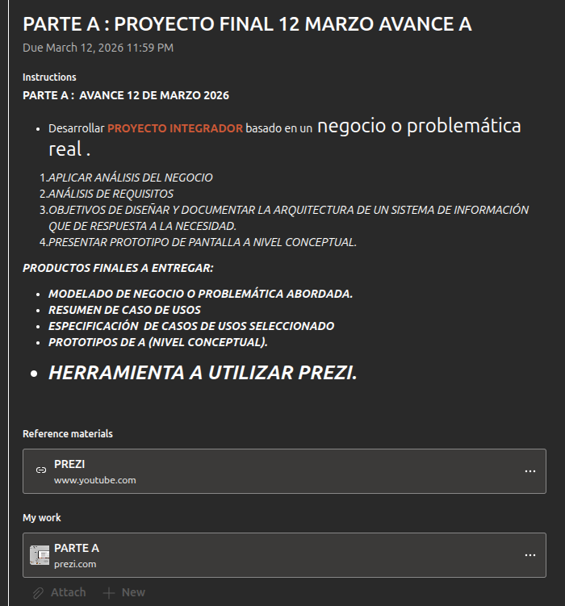
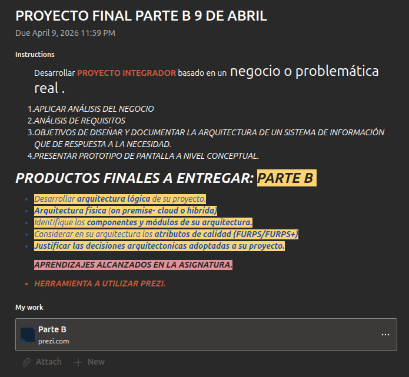
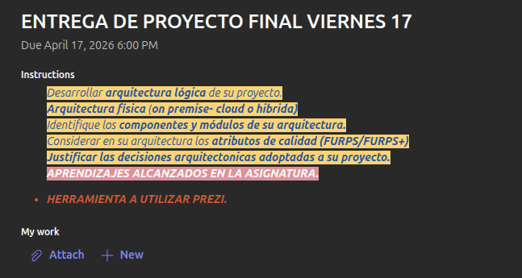

Proyecto Final - Examen
Parte A
Indicaciones del docente
- Desarrollar PROYECTO INTEGRADOR basado en un negocio o problemática real .
- APLICAR ANÁLISIS DEL NEGOCIO
- ANÁLISIS DE REQUISITOS
- OBJETIVOS DE DISEÑAR Y DOCUMENTAR LA ARQUITECTURA DE UN SISTEMA DE INFORMACIÓN QUE DE RESPUESTA A LA NECESIDAD.
- PRESENTAR PROTOTIPO DE PANTALLA A NIVEL CONCEPTUAL.

Parte B
Indicaciones del docente
- APLICAR ANÁLISIS DEL NEGOCIO
- ANÁLISIS DE REQUISITOS
- OBJETIVOS DE DISEÑAR Y DOCUMENTAR LA ARQUITECTURA DE UN SISTEMA DE INFORMACIÓN QUE DE RESPUESTA A LA NECESIDAD.
- PRESENTAR PROTOTIPO DE PANTALLA A NIVEL CONCEPTUAL.

Parte Final
Indicaciones del docente
- Desarrollar arquitectura lógica de su proyecto.
- Arquitectura física (on premise- cloud o hibrida)
- Identifique los componentes y módulos de su arquitectura.
- Considerar en su arquitectura los atributos de calidad (FURPS/FURPS+)
- Justificar las decisiones arquitectonicas adoptadas a su proyecto.
